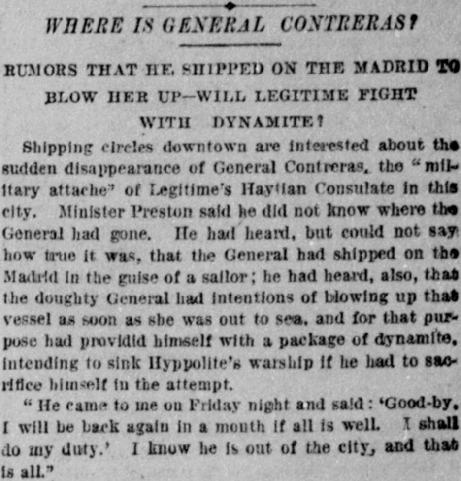

1 shall do my duty.’ 1 know he Is out of the cityHaré mi deber». Sé que él está fuera de
Based on the provided text, an unnamed General born in Spain, who participated in various European conflicts and political movements, organized a revolt against President Hereaux in San Domingo and was subsequently sentenced to death by the Dominican Government. After escaping San Domingo, he was exiled from Hayti by President Salomon, later restored to favor under Legitime, and associated with plans involving dynamite against Hyppolite's warship. Additionally, the newspaper reported on a minor incident in Litchfield, Illinois, where a gas-boring drill caught at a depth of 300 feet, causing excitement.A tenor del texto facilitado, un general anónimo nacido en España que intervino en varias contiendas y vicisitudes europeas encabezó una intentona contra el presidente Heureaux en Santo Domingo, siendo condenado a muerte por los tribunales dominicanos. Tras escapar de Santo Domingo, sufrió el destierro de Haití por orden del presidente Salomon, recuperó luego el favor bajo Légitime y apareció comprometido en maquinaciones con dinamita dirigidas contra el buque de guerra de Hyppolite. Por lo demás, el periódico reseñó un incidente baladí ocurrido en Litchfield (Illinois), donde una barrena para prospección de gas encalló a trescientos pies de hondo, despertando expectación.
FULL TEXT:TRADUCCIÓN:
BLOW HER UP—WILL LEGITIME FIGHT WITH DYNAMITE?VOLARLA—¿LUCHARÁ LEGITIME CON DINAMITA?
Shipping circles downtown are interested about the sudden disappearance of General Contreras, the "military attache" of Legitime's Haytian Consulate in this city. Minister Preston said he did not know where the General had gone. He had heard, but could not say how true it was, that the General had shipped on the Madrid in the guise of a sailor; he had heard, also, that the doughty General had intentions of blowing up that vessel as soon as she was out to sea, and for that purpose had provided himself with a package of dynamite, intending to sink Hyppolite's warship if he had to sacrifice himself in the attempt.Los círculos marítimos del centro están interesados en la súbita desaparición del general Contreras, el «agregado militar» del Consulado haitiano de Legitime en esta ciudad. El Ministro Preston dijo que no sabía adónde había ido el General. Había oído, pero no podía decir cuán cierto era, que el General se había embarcado en el Madrid en la guisa de marinero; había oído, también, que el valiente General tenía intenciones de volar ese buque tan pronto estuviera en el mar, y para ese propósito se había provisto de un paquete de dinamita, intentando hundir el buque de guerra de Hyppolite si tenía que sacrificarse a sí mismo en el intento.
"He came to me on Friday night and said: 'Good-by. I will be back again in a month if all is well. I shall do my duty.' I know he is out of the city, and that is all."«Vino a mí el viernes por la noche y dijo: 'Adiós. Estaré de vuelta en un mes si todo va bien. Cumpliré con mi deber.' Sé que está fuera de la ciudad, y eso es todo.»
New-York Tribune. New York, February 19, 1889. Page 3.